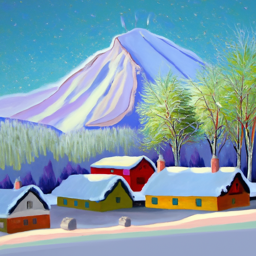
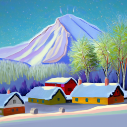
To gain access to the DeepFloyd IF diffusion model, I had to create a Hugging Face account and get an access token for the model. Below are images generated using preloaded text prompts and the DeepFloyd IF model.
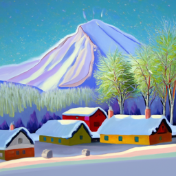
The first row of images is the output of stage 1 of the model, and the second row is the output of stage 2 of the model, given the output of stage 1. These images are generated with 20 inference steps. If we make this number 50, we get the following results.
Note: I am using a seed value of 100 for this project.
To understand how diffusion models work, I will replicate the process by which these models noise images to generate training data. The noisy image for timestep t is generated as follows:
Where the alpha bar term is a constant that comes from a scheduler that dictates how much noise gets added at each timestep. Below is an example of this noising process going from a normal image to images noised at t = 250, 500, and 750.

 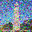
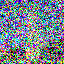
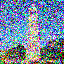
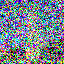
The diffusion model's iterative goal is to be able to denoise such images. To gain perspective on this problem, lets see how Gaussian denoising fairs. Below are the results with kernel sizes of 5, 15, and 21 respectively.
 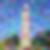
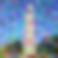


Now let's see how the diffusion model fairs. We will use the diffusion model's stage 1 UNet and feed it the noised images along with a text prompt "a high quality photo". Below are the results:
Here is the results of this process, with each fifth step visualized.
Now here is a comparison of the iterative denoising versus the one-step denoising versus the Gaussian blurring.
The iterative model can also generate images from scratch given pure noise and starting at the t = 990. Here are some results of this.
Personally, I like these abstract and unclear images, but if we want images that make more sense we can use classifier-free guidance. This is a technique we can use to push our image more towards what our prompt dictates. We do so by generating two noise estimates, one given no text prompt and another with our prompt. We then scale the difference in these two noises and add it to our no-text-prompt noise. This essentially exaggerates the impact of our text prompt on the predicted noise by moving further in a direction purely dictated by the text prompt. Using a scale of 7, we get the following results:

The diffusion model also allows us edit our images. One such editing method is to add noise to an image and pass it through the model. This will result in the model filling in certain details that are obscured by the noise. Doing so with image of the Campanile at varying noise levels (i_start = 1,3,5,7,10,20 yields the following results:
Doing so with an image of a cat and a dog gives us these images:
Original
Edits
Original
Edits
Diffusion also lets us convert a hand-drawn image to something more realistic. Here are some results of this process:
Original
Edits
Original
Edits
Original
Edits
We can also replace sections of our image. If we generate a mask and only replace the content within the mask with the content generated by the diffusion model, we end up with an edited image where the masked region is a new fabricated piece of the image. Below are some examples:


 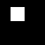
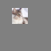
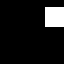
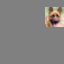
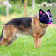
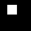
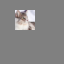
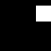
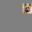
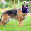We can do further image editing by using our noise editing technique from earlier but also using our prompt to influence what is filled into the noise. Here are some results where we use "a rocket ship" and "a pencil" to condition our edits.


We can also create visual anagrams with diffusion models. We do so by generating two noise estimates, one for the noisy image and another for the flipped noisy image. We then flip the noisy estimate of the flipped noisy image and average the two noise estimates. This will yield an image that looks like two different things based on what prompt was given for each orientation. Below are some results
One last thing we will explore is making hybrid images with diffusion. Normally, this process is quite involved but diffusion makes it easier. We simply run two noise estimates generated from different prompts through low pass and high pass filters and add them together. Here are the results.
Now that we are acquainted with the diffusion model and its abilities, we will train our own diffusion model that can generate handwritten digits.
First, we will train a denoising unet that can somewhat denoise a given noisy image of a digit. First, we need to generate a dataset of noisy images. We will noise MNIST images by simply adding gaussian noise scaled by some value. Below is a grid showing this noising processes. The values on the top indicate the constants by which the noise is scaled.
Next, we construct a UNet with the following architecture:

Next we will train this model to denoise noisy images (scaled by 0.5). Training will occur with a batch size of 256 for 5 epochs. We will use MSE loss and Adam optimization with a lr=1e-4. Below is the training loss graph:
After the first epoch, our model is fairly good at denoising. Below are some results:
Here is the model's performance after the last epoch.
Now let's see how the model performs on images with varying noise levels.
It is evident that is performs poorly on images with more noise.
The UNet from the previous section is lacking certain key attributes of the diffusion UNet. We need to add time and text inputs.
DDPM provides a way to train an iterative diffusion model according to some noise schedule. We can use the same equation from part A to generate noisy images for each timestep, except now we will generate the noise schedule ourselves. We do so by generating a set of evenly spaced beta values for each timestep and then generating alpha values which are simply 1 - beta_t and alpha bar values which are the cumulative products of the alpha values. Additionally, we want our UNet to take in the timestep, so we add in some fully-connected layers that can embed the timestep information and pass it into the model. Below is a diagram of the architecture:

We then generate a DDPM schedule for betas ranging from [0.0001, 0.02] and 300 timesteps. Using this schedule we train the above unet. For each training loop, we take an training image, noise it according to the schedule and a randomly selected timestep, and then optimize the loss between the model's noise prediction and the actual noise we added. Below is the training loss curve for this model.
We can also see the model's performance after epoch 5 with the following samples:
After the last epoch, we get the following results:
Note that these samples are generated by passing a pure noise image to the model and performing iterative diffusion as we did in part A.
Now that we've added time conditioning, lets also add class conditioning which will stand in for text prompting. This will allow us to generate specific digits with our model. We incorporate class conditioning by creating one-hot key vectors for each digit and passing these vectors into our model. We then train similarly to the previous part except now we also pass in the image labels to our model. Below is the training loss curve plot for the training process.
At epoch 0, here are some sample results with each row ranging from 0-9:
After the last epoch, we get the following results: